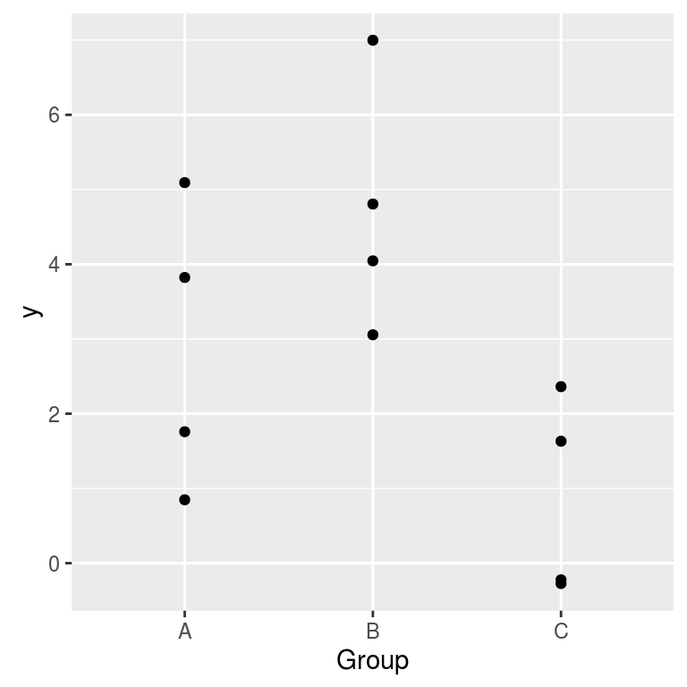

-
One-way random effects ANOVA in SAS and R
2016-03-08
SourceThe purpose of this article is to show how to fit a one-way ANOVA model with random effects in SAS and R. It is also intented to prepare the reader to a more complicated model.
We will use the following simulated dataset for illustration:
set.seed(666) I <- 3 # number of groups J <- 4 # number of replicates per group mu <- 2 # overall mean sigmab <- sqrt(2) # between standard deviation sigmaw <- 1 # within standard deviation Group <- LETTERS[gl(I,J)] # factor levels y <- c(sapply(rnorm(I,mu,sigmab), function(mui) rnorm(J, mui, sigmaw))) # observations dat <- data.frame(y=y, Group=Group) print(dat, digits=3)## y Group ## 1 5.094 A ## 2 0.848 A ## 3 3.824 A ## 4 1.759 A ## 5 4.046 B ## 6 3.056 B ## 7 4.807 B ## 8 6.999 B ## 9 -0.272 C ## 10 2.362 C ## 11 -0.222 C ## 12 1.632 CThe data are shown on the graphic below:
ggplot(dat, aes(x=Group, y=y)) + geom_point()
The ANOVA model with random effects is a usual way to model such data. Here the group is the random factor.
Denoting by \(y_{jk}\) the \(k\)-th measure in group \(j\), the model is \[ y_{jk} = \mu + \alpha_j + \epsilon_{jk} \] where:
\(\mu\) is the overall mean,
\(\alpha_j\) is the random deviation between the mean of group \(j\) and the overall mean, that is to say \(\mu_j:=\mu+\alpha_j\) is the mean of group \(j\),
\(\epsilon_{jk}\) is the random deviation between the \(k\)-th measure \(y_{jk}\) of group \(j\) and the mean \(\mu_j\),
and the distributional assumptions are: \[ \alpha_j \sim {\cal N}(0, \sigma_b^2) \quad \text{and }\; \epsilon_{jk} \sim {\cal N}(0, \sigma_w^2) \] The variances \(\sigma_b^2\) et \(\sigma_w^2\) are the between variance and the within variance respectively (between-groups and within-group).
One can also write this model in a hierarchical way (this is the way I used to simulate the data): \[\mu_j \sim {\cal N}(\mu, \sigma^2_b), \qquad (y_{jk} \mid \mu_j) \sim {\cal N}(\mu_j, \sigma^2_w).\]
This model is coded as follows in SAS:
PROC MIXED DATA=dat COVTEST CL; CLASS Group ; MODEL y= ; RANDOM Group G GCORR ; RUN; QUIT;The instructions
COVTEST,CL,GandGCORRare optional. They provide more things in the output. The nameGrefers to the \(G\)-matrix in the SAS terminology, which is the covariance matrix of the random effects. The nameGCORRrefers to the corresponding correlation matrix.One can fit this model in R with the
lmerfunction of thelme4package:library(lme4) ( fit <- lmer(y ~ (1|Group), data=dat) )## Linear mixed model fit by REML ['lmerMod'] ## Formula: y ~ (1 | Group) ## Data: dat ## REML criterion at convergence: 48.2565 ## Random effects: ## Groups Name Std.Dev. ## Group (Intercept) 1.738 ## Residual 1.663 ## Number of obs: 12, groups: Group, 3 ## Fixed Effects: ## (Intercept) ## 2.828One can also fit it with the
lmefunction of thenlmepackage:library(nlme) lme(y ~ 1, random = ~1|Group, data=dat)## Linear mixed-effects model fit by REML ## Data: dat ## Log-restricted-likelihood: -24.12826 ## Fixed: y ~ 1 ## (Intercept) ## 2.827707 ## ## Random effects: ## Formula: ~1 | Group ## (Intercept) Residual ## StdDev: 1.737895 1.663373 ## ## Number of Observations: 12 ## Number of Groups: 3The (almost) equivalent repeated measures model
The random effects yield a correlation between the measures within a same group. Precisely, the four-tuples of measures \((y_{j1}, y_{j3}, y_{j3}, y_{j4})\) are independent of each other, and follow a multivariate Gaussian distribution with mean \((\mu,\mu,\mu,\mu)\) and covariance matrix \[ \Sigma = \begin{pmatrix} \sigma_b^2+ \sigma_w^2 & \sigma_b^2 & \sigma_b^2 & \sigma_b^2 \\ \sigma_b^2 & \sigma_b^2 + \sigma_w^2 & \sigma_b^2 & \sigma_b^2 \\ \sigma_b^2 & \sigma_b^2 & \sigma_b^2 + \sigma_w^2 & \sigma_b^2 \\ \sigma_b^2 & \sigma_b^2 & \sigma_b^2 & \sigma_b^2 + \sigma_w^2 \end{pmatrix}. \] This kind of distribution is said to be exchangeable. That means that the distribution is invariant by permutations.
From this point of view, the model is called a repeated measures model. Such a correlation structure is said to be of the compound symmetry type in the SAS terminology, and is specified by the
type=CSinstruction:PROC MIXED DATA=dat ; CLASS Group ; MODEL y= ; REPEATED / SUBJECT=Group type=CS R RCORR ; RUN; QUIT;The instructions
RandRCORRare optional. They provide the estimate of the covariance matrix and the estimate of the correlation matrix.It is cleaner to add a column in the dataset to indicate the repetitions:
dat$Repeat <- rep(1:J, times=I) print(dat, digits=3)## y Group Repeat ## 1 5.094 A 1 ## 2 0.848 A 2 ## 3 3.824 A 3 ## 4 1.759 A 4 ## 5 4.046 B 1 ## 6 3.056 B 2 ## 7 4.807 B 3 ## 8 6.999 B 4 ## 9 -0.272 C 1 ## 10 2.362 C 2 ## 11 -0.222 C 3 ## 12 1.632 C 4and to include it in the SAS code :
PROC MIXED data=dat; CLASS Group Repeat; MODEL y= ; REPEATED Repeat / SUBJECT=Group type=CS R RCORR ; RUN;This is not necessary here since the index of the repetition has no importance because of the symmetry of the correlation structure. But this column is important for other correlation structures.
There is only one difference between the random effects model and the repeated mesures model. With the first model, the correlation between two measures inside a same group is \(\sigma_b^2/(\sigma_b^2 + \sigma_w^2)\), and then it is constrained to be positive, whereas there is no positivity constraint with the second model.
This kind of model belongs to the generalized linear models (GLS) family. One can fit this model in R with the
glsfunction of thenlmepackage:library(nlme) gls(y ~ 1, data=dat, correlation=corCompSymm(form= ~ 1 | Group))## Generalized least squares fit by REML ## Model: y ~ 1 ## Data: dat ## Log-restricted-likelihood: -24.12826 ## ## Coefficients: ## (Intercept) ## 2.827707 ## ## Correlation Structure: Compound symmetry ## Formula: ~1 | Group ## Parameter estimate(s): ## Rho ## 0.5218981 ## Degrees of freedom: 12 total; 11 residual ## Residual standard error: 2.405634The residual error returned by
glsis the estimate of the total standard deviation, which is \(\sqrt{\sigma_b^2+\sigma_w^2}\) in the random effects model. It also returns an estimated of the correlation. This is the parameter namedRhoin the output. In the random effects model, this correlation is \(\frac{\sigma_b^2}{\sigma_b^2+\sigma_w^2}\).
- Home
- About
- PoirotReproducible Blogging with R Markdown
- SlidifyReproducible html5 slides from R markdown
- R-bloggersBlog posts about R, contributed by R bloggers worldwide.
- stla.overblogMy previous blog
- Timely Portfolio A great blog about R, Javascript, and more